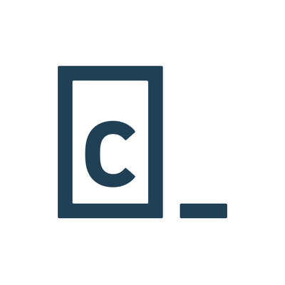

Programming Web Tutorials
In this part we will tell you what are the programming web we use to learn about the programming language that we want.

W3Schools is one of the most popular web development tutorial sites that offer free, step-by-step tutorials and examples for HTML, CSS, JavaScript, PHP, and more. The site has interactive code editors and quizzes to help learners test their knowledge.
FreeCodeCamp is a non-profit organization that offers a full curriculum for web development. The curriculum includes courses in HTML, CSS, JavaScript, React, Node.js, and more. FreeCodeCamp also provides learners with projects to work on, which can be added to their portfolio.

Codecademy is a free and interactive learning platform that provides students with the opportunity to learn to code in various programming languages such as Python, HTML, CSS, JavaScript, and more. It offers a variety of interactive courses and projects, allowing students to practice and apply what they learn.